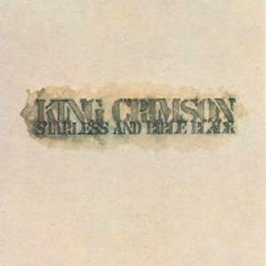
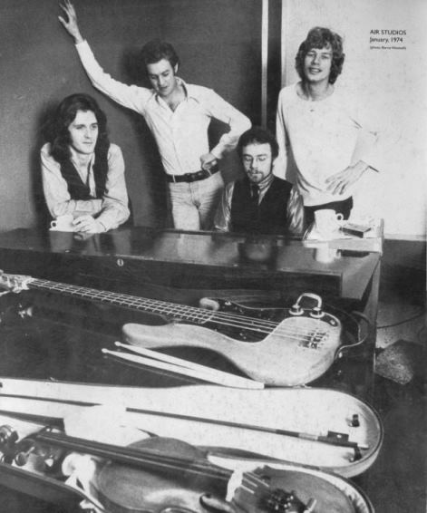
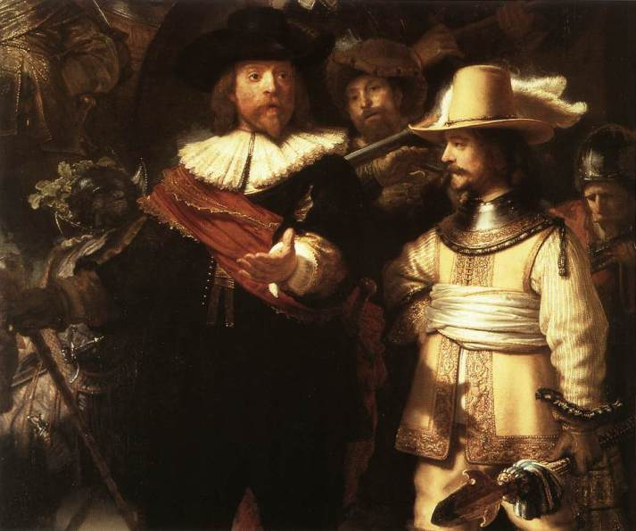

|

Starless and bible black
(Sin
estrellas y negro de biblia)
Editado en marzo de 1974
Climas densos o climas etéreos, todos son parte de la
realidad. KC los refleja a su modo. Y los refleja mejor en vivo. Solo 2 de los 8 temas del album fueron
grabados totalmente en estudio (los 2 primeros, que suenan enganchados; el que
abre el disco es un excelente y potente rock); We'll let you know, Trio, The
mincer, Starless and bible black, Fracture y el
comienzo de The night watch fueron
grabados en vivo y remezclados en estudio; los 4 primeros temas nombrados son improvisaciones,
y el
tema Fracture, compuesto por Fripp, parece la musicalización de un cuento de terror de
Lovecraft o Edgar Alan Poe.
Formación de la banda |
Temas |
| Robert Fripp: guitarra, melotrón y efectos |
1 - The great deceiver (El gran embaucador) 4'03
(letra) |
| John Wetton: bajo y voz |
2 - Lament (Lamento) 4'02 |
| Bill Bruford: batería y percusión |
3 - We'll let you know (Te dejaremos saber) 3'41 |
| David Cross: violín, viola y teclados |
4 - The night watch (La ronda nocturna) 4'42
(letra) |
| |
5 - Trio (Trío) 5'41 instrumental |
| |
6 - The mincer (La picadora) 4'09 |
| |
7 - Starless and bible black 9'14 instrumental |
| |
8 - Fracture (Fractura) 11'17 instrumental |
Letras de Richard Palmer-James.
Música:
- temas 1, 2 y 4: Fripp y Wetton
- temas 3, 5, 6 y 7: Cross, Fripp, Wetton,
Bruford
- tema 8: Fripp
 
El cuarteto en estudio de grabación, enero del '74.
Notas
-
Este disco no es un típico disco de estudio, tampoco
es un disco en vivo; es un raro híbrido, resultado de una innovadora forma
de abordar un proceso de creación: tomar grabaciones en vivo y remezclarlas
con algunos agregados en estudio.
-
We'll let you know (improvisación) fue grabado en el recital de
Glasgow del 23 de octubre de 1973.
-
La música del tema The mincer (improvisación)
fue grabada en el recital de Zurich
del 15 de noviembre de 1973 (luego se le agregó canto en estudio).
-
Trio (improvisación), Starless and bible black
(improvisación), Fracture
y la primera parte de The night watch fueron grabados en el recital de Amsterdam del 23 de noviembre de 1973 (el
disco de este recital fue editado en 1997 con el nombre "The night
watch").
-
El album se grabó en estudio en enero del '74. Al mes
siguiente Cross decía en un reportaje: "A veces me preocupo, que nos
expandimos tan lejos y nuestra música es a menudo una aterrorizante
expresión de ciertos aspectos del mundo y de la gente. Es importante tener
canciones como material escrito, para contrapesar aquello, así no nos
conduce a la insanía. Tenemos que trabajar muy duro para lograr un balance.
Hemos tenido solo un momento de verdadera paz en improvisación con esta
banda, fue algo que hicimos solo con violín, bajo y guitarra en un
concierto en Amsterdam. La mayor parte del tiempo nuestra improvisación
viene del horror y el pánico." La improvisación con verdadera
paz a la que se refería Cross es el tema Trio, pero en realidad en esa
improvisación Fripp tocó melotrón en lugar de guitarra. Quizás estos
dichos hicieron que el grupo intentara otra improvización con
"paz" en escena; se trata del tema Daniel Dust, tocado el
29 de abril del '74 en Pittsburgh, y editado en el box set "The great
deceiver" en 1992.
-
Lo que ocurrió con el tema Trio refleja la
concepción que tenía la banda sobre la música, y también evidencia la carencia de
egocentrismos y celos profesionales (carencia no habitual en los artistas): el nombre
del tema se debe a que fue improvisado por Fripp, Wetton y
Cross, ya que Bruford no se animó a tocar ni una vez ninguno de sus
instrumentos, porque sintió que el tema estaba saliendo bello de la forma
en que se estaba dando y no necesitaba de su participación. Sin embargo, el
tema está firmado por los cuatro, porque sus compañeros consideraron que
el silencio de Bruford fue activo, que en esas ocasiones el silencio es parte de la música
e influye para que las canciones salgan como salen. En este caso, permitió
que sobreviviera la serenidad.
"No es de extrañar
que Bruford optara por no tocar la canción con las baquetas simbólicamente
dobladas sobre el pecho. Esto no solo le permitió controlar su ritmo
durante el resto del set, sino que la ausencia de cualquier intervención
percusiva contribuyó de forma significativa y decisiva a la dinámica del
tema y a la interpretación en general; de ahí su crédito como compositor.
Wetton solo siente admiración por la capacidad auditiva de Bruford: «La
mayoría de los bateristas habrían tocado algo con las escobillas, pero él
no hizo nada en absoluto. Simplemente decía: 'Creo que pueden con esto',
pero no habría sucedido con nadie más»." (Sid Smith,
de su libro In the court of King
Crimson)
-
El tema Fracture es una de las composiciones
más complejas hechas para guitarra. Nunca se grabó en estudio, y
escuchándolo da la sensación de que hubiera más de una guitarra, pero
solo está sonando la de Fripp en escena. En el futuro, incluyendo las décadas
de los '80 y '90, Fripp usaría fragmentos de esta pieza para "entrar
en calor" los dedos antes de una presentación.
-
La letra del tema The night watch es sobre la pintura
homónima de Rembrandt (fragmento mostrado abajo). En esta pieza
Fripp toca además
armonio.
-
"La frase que da nombre a este disco fue entresacada de un
poema del excesivo y exuberante poeta galés del siglo XX Dylan Thomas. Un
poema llamado Under the Milkwood que diría esto en español: «Para
empezar por el principio: es primavera, noche sin luna en el pequeño
pueblo, sin estrellas y de un negro de biblia, las calles de adoquines
silenciosas y el henchido bosque de los conejos a duras penas andan,
invisibles, hacia el azabache, lento, negro mar, negro como un cuervo,
meciendo a los barcos de pesca».” (Alejandro Díaz Varón, de su libro King
Crimson: crónica de un malestar). Era el título de una canción
cantada por Wetton que no se usó en el album, y la empezaron a tocar en
vivo, con el nombre abreviado (Starless) y tramos
musicales agregados. La frase se usó para titular este disco y una de las
improvisaciones incorporadas. La versión completa se grabó en estudio para
el album siguiente, Red.

|
 Starless and bible black
Starless and bible black